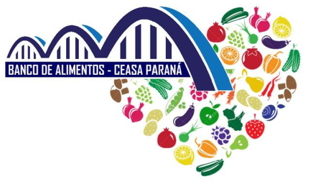

O Que é a CEASA/PR
A sigla CEASA/PR significa Centrais de Abastecimento do Paraná e tem entre seus objetivos o aprimoramento da comercialização e distribuição de produtos hortigranjeiros tanto dentro do Estado como em todo o Brasil. Atualmente, existem cinco Unidades Atacadistas no Paraná, sendo elas: Cascavel, Curitiba, Foz do Iguaçu, Londrina e Maringá.
Na comercialização dentro da CEASA/PR encontram-se dois tipos de mercado: O Mercado do Produtor – Área específica onde Produtores Rurais Paranaenses, com área de produção no Estado do Paraná devidamente cadastrada na CEASA/PR.
Os Boxes são ocupados pelas Empresas Permissionárias /Atacadistas privadas que obtiveram a permissão de uso do espaço através de participação em licitações públicas.

O Que é o Banco de Alimentos?
O Banco de Alimentos da CEASA/PR nasceu com o propósito de prestar auxílio à população em situação de insegurança alimentar por meio de Instituições/Famílias cadastradas, onde os produtos não comercializados por estarem fora do padrão de mercado (porém em boas condições de consumo) são doados pelos Permissionários e Produtores Rurais nas Unidades Atacadistas da CEASA/PR.
Esses produtos arrecadados são recebidos, selecionados, processados e distribuídos gratuitamente às Instituições Sociais e Famílias previamente cadastradas como forma de complementação às refeições diárias da população assistida.
Objetivos do Banco de Alimentos
Os Objetivos de Desenvolvimento Sustentável são um apelo global à ação para acabar com a pobreza, proteger o meio ambiente e o clima e garantir que as pessoas, em todos os lugares, possam desfrutar de paz e de prosperidade.
Dentre os 17 Objetivos do Desenvolvimento Sustentável (ODS) da ONU, o Banco de Alimentos atende 12.

Arrecadação de Alimentos
O Banco de Alimentos recebe qualquer doação de hortifrutigranjeiros em bom estado dos Permissionários e Produtores Rurais da CEASA/PR, tais como frutas, legumes e verduras.
Todas essas doações são produtos que seriam descartados por não atenderem os padrões comerciais exigidos ou que não foram comercializados, então os Permissionários e Produtores Rurais levam esses alimentos para o Banco de Alimentos, que então se encarrega de selecioná-los e prepará-los para serem distribuídos.
Esses alimentos são então separados, sendo encaminhados para distribuição “in natura” ou para processamento, onde são transformados em extratos, polpas, sopas, doces etc.

Informações Nutricionais
Todos os alimentos processados pelo Banco de Alimentos possuem uma etiqueta com tabela nutricional visando manter as Famílias e as Instituições informadas sobre os valores nutricionais de cada produto, e dessa forma, elaborar refeições com um equilíbrio nutricional adequado.
Essas etiquetas também contêm informações sobre o número de telefone do Banco de Alimentos, onde podem ser esclarecidas maiores informações.